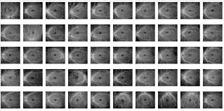
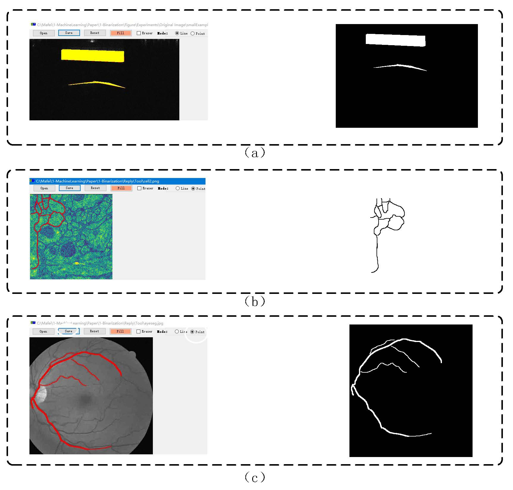

Dual-Path Attention based Network for Fundus Segmentation on OCT-Angiography
--------------------------------------------------------------------------------------------------------------------------------------------
Dual-Path Attention Network (DPANet) model for segmentation 2023.7.5.,
Permission to use copy, or modify this dataset, tool and codes for educational and research purposes.
E-mail : mafei0603（at）163.com ; 17861318579（at）163.com
Homepage : https://17861318579.github.io/LOID
--------------------------------------------------------------------------------------------------------------------------------------------
1. Dataset Description
Our constructed Lesion segmentation OCTA Image Dataset (LOID) contains two subsets, named LOID-PDR (Proliferative diabetic retinopathy) and LOID-OD (optic disc), which were acquired by a SS-OCT (swept-source optical coherence tomography) system (VG200D, SVision Imaging, Ltd., Luoyang, Henan, China) and based on DR database. The lesion annotations of OCTA images in the LOID dataset are based on the pixel level.
DR photos are captured by a 12 mm * 12 mm SS-OCT centered on the fovea in 288 diabetic patients. We selected 50 OCTA images with PDR. To be private, we delete the information of patients, such as sex, name and age. The symptoms of PDR mainly include neovascularization and pre-retinal hemorrhage. The original images are the same for the two sub-sets. PDR lesions are annotated in the LOID-PDR dataset. The optic discs are labeled in the LOID-OD dataset.
All DR images are labeled by the ophthalmologist. All the DR lesions in our constituency belonged to PDR. The ophthalmologist labeled the PDR lesion annotations and the retinal optic discs in the LOID dataset, respectively.
2.1 The making ground-truth tool developed by our team can be downloaded with URL：MakeGroundtruthTool_v1.01 (windows desktop app at .netframework2.0).This software is a specialized tool to make the ground truth from original samples under complex scene. The ground-truth images can be obtained by this tool with the help in Fig.2, which is developed by our team. This application is run under .netframework2.0(win-x64) with windows 10 (x86 or x64).
2.2 The ground-truth tool developed by our team can be downloaded with URL：MakeGroundtruthTool_v1.0 (windows desktop app at .net 5.0).This software is a specialized tool to make the ground truth from original samples under complex scene. The ground-truth images can be obtained by this tool with the help in Fig.2, which is developed by our team. This application is run under .net 5.0 runtime(win-x86) with windows 10 (x86 or x64).
2.3 The key code of our approach (DPANet) for demo can be downloaded here (Pytorch).
2.4 The code of U-Net for demo can be downloaded here (Pytorch).
--------------------------------------------------------------------------------------------------------------------------------------------
FIGURE 1 The thumbnail view of the LOID Dataset
The Original Image 
The Ground-truth of PDR

The Ground-truth of OD

--------------------------------------------------------------------------------------------------------------------------------------------
FIGURE 2 The help for the ground-truth tool(MakeGT, it can make GT for several types of scenes.)
